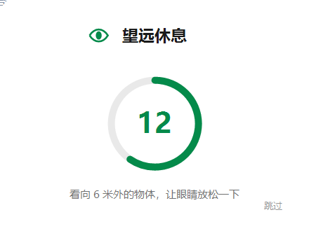
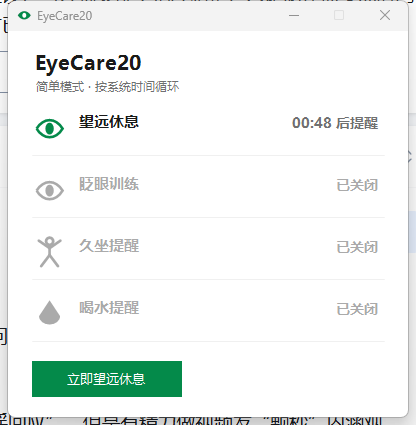

每用眼 20 分钟，望远 20 秒 —— 68KB 的 Windows 护眼提醒小工具
望远休息 · 眨眼训练 · 久坐提醒 · 喝水提醒
正在检测线路，为你推荐最快下载源…
每 20 分钟弹一张居中倒计时卡，引导看向 6 米外放松睫状肌。基于美国眼科学会推荐法则，Aston 大学研究验证有效。
屏幕专注时眨眼频率骤降一半，导致干眼。眼睛开合动画引导完整眨眼，重建泪膜。
默认每 60 分钟提醒站起来走动、伸展。久坐是独立的健康风险因素，定时打断是唯一解法。
专注时最容易忘记的就是喝水。默认每 45 分钟温和提醒一次。
到期时间接近的提醒自动合并为一张卡同时提醒；重排后任意两个提醒至少错开 5 分钟——不打扰流，也永不轰炸。
倒计时期间检测到键鼠操作或全屏应用（游戏/电影）→ 倒计时自动暂停；看视频、听歌不受影响。真正休息才算数。
按日记录完成、跳过与休息时长，本地存储、绝不上传。让坚持看得见。
启动静默检查，一键完成下载→替换→重启（约 2 秒）。国内 Gitee 直连，国外 GitHub 回退，全球都能顺畅更新。


从上方 Gitee 或 GitHub Releases 下载 EyeCare20.exe，仅 68KB，无需安装。
绿色软件即刻驻留托盘。若 SmartScreen 提示：右键 exe → 属性 → 解除锁定。
一劳永逸。双击托盘图标随时查看剩余倒计时。
| EyeCare20 | Stretchly (Electron) | Project Eye | |
|---|---|---|---|
| 体积 | 68 KB | ~300 MB | ~20 MB |
| 内存占用 | ~35 MB | ~200 MB+ | ~80 MB |
| 提醒合并/错峰 | 有 | 无 | 无 |
| 休息中操作暂停 | 有 | 无 | 无 |
| 国内更新源 | Gitee 直连 | — | — |
| 开源协议 | MIT | BSD | MIT |